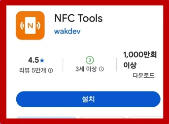
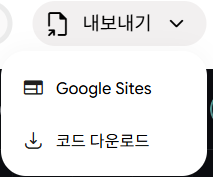
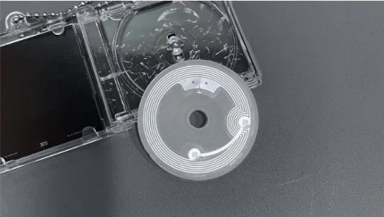
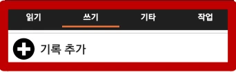
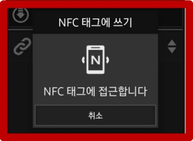

01
NFC Tools 설치

NFC Tools · wakdev 앱을 설치하고 열어요.
좋아하는 K컬처를 웹사이트로 만들고,
톡! 터치하면 열리는 나만의 NFC 키링으로.
취향 탐색 → 콘셉트 기획 → AI 요청서 → 친구 피드백
무엇을 소개하는지 바로 알 수 있나요?
가장 눌러 보고 싶은 기능은 무엇인가요?
제작 10분 → 테스트 10분 → 수정 10분 → 주소 확인과 공유
① 1차시 Gemini 대화 열기 ② 아래 문장 보내기 ③ 미리보기 실행
앞에서 기획한 K컬처 웹사이트를 실제로 만들어줘. 모든 메뉴와 버튼이 작동하고 휴대전화에서도 보기 편하게 해줘. 내가 정한 색상과 분위기를 반영해줘. 자료가 없는 내용은 임의의 사실 대신 예시로 표시해줘.
Gemini에서 내보낸 뒤 Google Sites에서 게시를 마쳐요.

학교 계정에서는 내보내기·게시 또는 외부 공개가 제한될 수 있어요. Google Sites의 ‘공유’에서 게시된 사이트의 보기 권한을 선생님과 확인해요. 편집 권한과 게시된 사이트 보기 권한은 달라요.
내보내기만으로는 게시가 완료되지 않아요. Google Sites에서 게시까지 완료하고, 친구 기기에서 열린 주소를 저장해요.
Google 공식 사이트 게시 안내 ↗콘셉트 5분 → Canva 디자인 15분 → 제출 7분 → 조립과 소개
허용된 이미지 사용 · 개인정보 넣지 않기



태그 위치는 키트에 맞춰요. 완전히 고정하기 전에 4차시에서 기록·인식을 먼저 확인하면 좋아요.
준비 5분 → 기록 13분 → 연결 테스트 9분 → 작품 교환과 회고

NFC Tools · wakdev 앱을 설치하고 열어요.

Write(쓰기) 탭에서 기록 추가를 눌러요.

텍스트 대신 URL / URI를 선택해요.
2차시 주소를 붙여넣고 확인을 눌러요.
https://가 두 번 들어가지 않게!

쓰기 / ○○ 바이트를 누른 뒤 태그를 대요.
완료될 때까지 움직이지 않아요.

쓰기 완료 확인 → 앱 닫기 → 다시 태그하기.
알림을 눌러 내 웹사이트를 열어요.
실습 화면·조립 사진: 제공 자료 「북부미래직업메이커체험_NFC」 7·9·10쪽. 자료의 음악 링크 대신 2차시에서 만든 웹사이트 주소를 사용해요.
태그를 움직이지 않고 다시 쓰기 → 쓰기 가능·용량 확인 → 선생님께 예비 태그 요청
인터넷 확인 → 브라우저에서 주소 열기 → 게시·접근 권한 확인 → URL / URI로 다시 기록
카메라·Wallet 종료 → 비행기 모드 확인 → 상단을 태그에 대기 → 미지원 기종은 앱의 Read(읽기) 사용
NFC 지원 기기가 없으면 공용 기기로 실습해요.